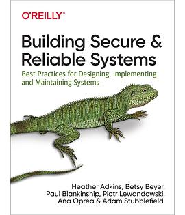
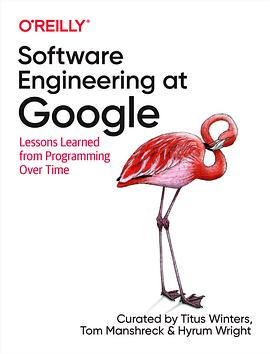

2020年4月
17 条
其中 10 条带正文
广播发布后不可编辑，所以每条都是那一刻的原话。
2020-04-26 18:11:08

2020-04-25 19:57:26
 看过 二之国 / 二ノ国
看过 二之国 / 二ノ国
没玩过游戏，设定满分！电影看得也很过瘾！ //设定很有意思，nino kuni 意思是第二个国度，感觉和穿越次元的感觉一样。
2020-04-25 19:07:38
想看 二之国 / 二ノ国
设定很有意思，nino kuni 意思是第二个国度，感觉和穿越次元的感觉一样
2020-04-25 16:15:02
 想看 憨豆特工2 / Johnny English Reborn
想看 憨豆特工2 / Johnny English Reborn
2020-04-25 16:14:47
 看过 憨豆特工3 / Johnny English Strikes Again
看过 憨豆特工3 / Johnny English Strikes Again
如何编巧合的故事😛
2020-04-25 14:45:19
 看过 攻壳机动队：SAC_2045 / 攻殻機動隊 SAC_2045
看过 攻壳机动队：SAC_2045 / 攻殻機動隊 SAC_2045
这个耐飞原创攻壳机动队很赞啊！剧情画面演出都没得说👍👍👍
2020-04-24 12:33:16

早上起来发现KK来演唱会了，credits也都出来了，说明我打通关了 yay！
2020-04-23 21:31:39
在看 攻壳机动队：SAC_2045 / 攻殻機動隊 SAC_2045
2020-04-19 16:28:30
2020-04-19 16:27:58
 想看 荼蘼
想看 荼蘼
2020-04-16 13:08:47

高帧率定格动画，简直酷到爆！
2020-04-12 13:06:41
 想看 心灵奇旅 / Soul
想看 心灵奇旅 / Soul
2020-04-12 11:41:21

2020-04-09 08:55:45

也是新书，已经可以在官网上免费读了
2020-04-09 08:53:52

我司新书，我还看不到 LOL！
2020-04-06 17:41:49
 看过 纸钞屋 第四季 / La casa de papel Season 4
看过 纸钞屋 第四季 / La casa de papel Season 4
阿西，又是未完待续的死局结局，爽了8集但是还不够啊🤣 太坑了吧导演
2020-04-04 22:37:23
在看 纸钞屋 第四季 / La casa de papel Season 4
耐飞续订